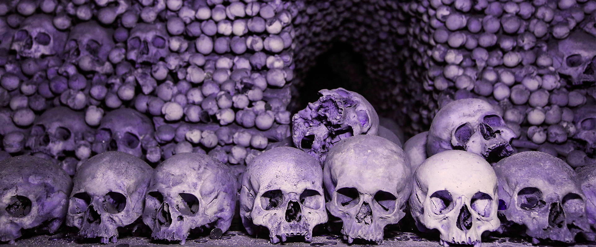
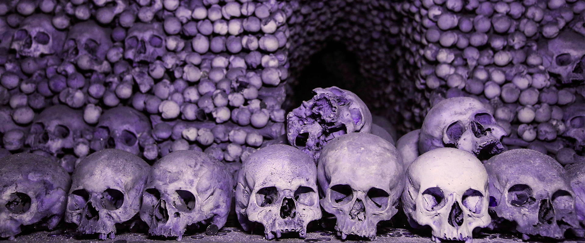

Populares
El Castillo de Houska, situado en la República Checa,
es famoso por su historia paranormal y leyendas que lo rodean.
Construido en el siglo XIII, se dice que fue levantado sobre una puerta al infierno,
de la que emergen fuerzas oscuras. Varios visitantes aseguran haber presenciado fenómenos extraños,
como sombras, ruidos y sensaciones inexplicables. Su atmósfera misteriosa y la arquitectura gótica
contribuyen a su fama como uno de los lugares más embrujados de Europa. Hoy en día, sigue atrayendo
a turistas y curiosos que buscan vivir experiencias sobrenaturales en un entorno histórico.
El Castillo de Frankenstein, cercano a Darmstadt, Alemania,
es conocido por ser la inspiración de la novela de Mary Shelley.
Edificado en el siglo XIII, este lugar está envuelto en leyendas
de experimentos macabros y apariciones fantasmales. Los visitantes
reportan ver luces extrañas, sombras y escuchar susurros misteriosos
en sus ruinas. La atmósfera tenebrosa del castillo, junto con sus
relatos de fantasmas, lo convierten en un destino popular para quienes
buscan experimentar la historia y el misterio. Eventos nocturnos y
tours guiados ofrecen la oportunidad de explorar sus secretos y leyendas
que perduran con el tiempo.
 


Las Catacumbas de París forman un vasto laberinto subterráneo que contiene los restos
de millones de personas. Construidas en el siglo XVIII para aliviar el problema de los
cementerios saturados, estas galerías se han vuelto famosas por sus leyendas paranormales.
Visitantes afirman haber sentido presencias, escuchado susurros y visto figuras fantasmales
en la oscuridad. La atmósfera claustrofóbica y misteriosa que envuelve las catacumbas atrae
a aventureros y curiosos. Explorar este mundo oculto bajo París es adentrarse en una historia
de muerte, misterio y fenómenos inexplicables que fascinan hasta hoy.
Leap Castle, ubicado en Irlanda, es considerado uno de los castillos más embrujados del mundo.
Construido en el siglo XV, su historia está llena de episodios oscuros, asesinatos y torturas.
Se dice que alberga numerosos fantasmas y presencias inquietantes. Visitantes han reportado
apariciones, ruidos extraños y objetos que se mueven solos. La atmósfera densa y las leyendas
que lo rodean hacen que sea un destino popular para cazadores de fantasmas y turistas.
Sus muros guardan secretos que continúan generando misterio y temor, haciendo de Leap Castle
un lugar fascinante y aterrador a la vez.